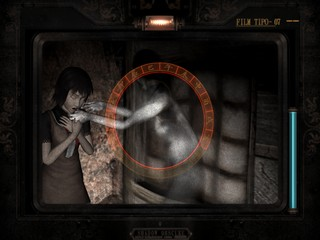
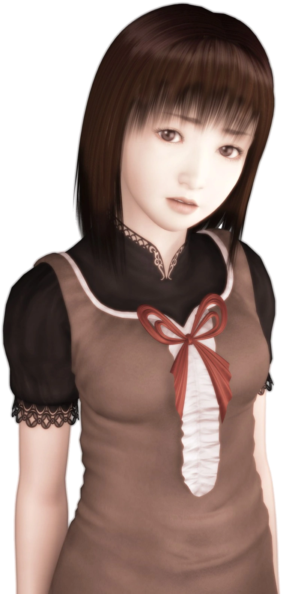

Silent Hill 2
Trama
James Sunderland ha llegado al pueblo de Silent Hill después de haber recibido una carta de su esposa, Mary, a pesar de que había muerto de una enfermedad hace tres años. La carta afirma que Mary está a la espera de James en su "lugar especial", lo que confunde a James, ya que todo el pueblo de Silent Hill era su "lugar especial", pero finalmente decide dirigirse a Rosewater Park. Después de salir de la plataforma de observación del pueblo y viajando hacia Silent Hill, James cruza el cementerio Toluca y se encuentra a Angela Orosco, una adolescente que llegó al pueblo en busca de su madre, su hermano y su padre. Esta le advierte que no debería ir a ese lugar, ya que cosas muy extrañas han estado pasando últimamente, pero James decide ir de todas formas, todo sea por encontrar a Mary.
Cuando James llega a Silent Hill descubre que no es el mismo pueblo, hermoso como lo fue en el pasado. Además de la extraña niebla omnipresente, el pueblo entero parece estar deteriorado y abandonado. Monstruos macabros, apenas humanoides están vagando por las calles y tratando de atacar a James cuando sea posible. Cuando descubre que el camino hacia su primer destino, el parque Rosewater, está cortado, James decide viajar a través de un complejo de apartamentos para llegar a lo que él cree que podría ser el "lugar especial" que Mary mencionó en su carta. Cuando James llega finalmente al parque Rosewater conoce a una mujer llamada María, la cual luce casi idéntica a su difunta esposa, Mary, pero vestida con un atuendo más provocativo y una actitud más insolente. Durante sus viajes, ella le revela cosas que sólo él o Mary sabrían, y actúa de una manera muy seductora hacia James.
Personajes Jugables
-
James Sunderland
Es el protagonista de la historia principal del juego, llamada "Carta del silencioso cielo". El estado mental de James es bastante inestable, a menudo toma riesgos innecesarios o actúa de forma imprudente. Si bien parece ser amable con las personas, de vez en cuando manifiesta reacciones agresivas con los demás, aunque luego vuelve a la normalidad.
-
María
Es la protagonista de la historia secundaria del juego, llamada "Nacida de un deseo". Tiene un gran parecido a la difunta esposa de James, de hecho su nombre es casi idéntico. No se sabe como es que llegó a Silent Hill, de hecho, no se sabe si esta mujer realmente existe o es parte de la imaginación de James de como le hubiese gustado que sea su esposa.
Trailer del Juego
Fatal frame 2: Crimson Butterfly
Trama
Las hermanas gemelas Mio Amakura y Mayu Amakura asisten al bosque de su niñez recordando el pasado cuando Mayu desaparece y Mio la ve persiguiendo una misteriosa Mariposa Carmesí. Mio, preocupada por su hermana la sigue hasta que llegan a un misterioso pueblo llamado Village All God. El pueblo esta curiosamente vacío, y se dice que el pueblo fue maldecido por algún evento pasado, y aquellos que entren quedaran atrapados en el pueblo en una Noche Perpetua. Las dos hermanas deciden investigar antes de escapar. Entran en una casa cercana, la Casa Osaka. En el interior encuentran la Cámara Oscura, ademas de unos diarios de una mujer que visitó la aldea en busca de su novio desaparecido.
Después de encontrar el último diario, el Fantasma de la mujer ataca a las hermanas. Después de la feroz pelea, Mio se desmaya y tiene una visión sobre una mujer Miyako Sudo, que quedó atrapada y fue asesinada por el Fantasma de su novio, Masumi Makimura. Mio despierta, solo para notar Mayu es llevada por el mal camino a causa de los Fantasmas, y Mio decide salvar a su hermana y escapar antes que terminen con la misma suerte maldita de la gente del pueblo y sus residentes. Sin embargo, Mio con el fin de rescatar a su hermana y escapar de la aldea, debe profundizar en un Ritual que se llevo a cabo en el pueblo, el Ritual Sacrificio Carmesí, donde uno de los gemelos debe matar al otro.
Personajes Jugables
-
Mio Amakura
Es la protagonista de Fatal Frame II. Mio posee un poder considerable, aun que menor al de su hermana, este poder fue heredado por parte de su padre, Misao Asou. Esto convierte a mio y mayu en descendientes directos del Dr Kunihiko Asou.
-
Mayu Amakura
Es la hermana gemela mayor de Mio Amakura. Ella tiene un sexto sentido muy fuerte, pero posee una muy baja resistencia hacia los fantasmas. Por lo que es usada a menudo por los fantasmas como medium. Ella y su hermana son descendientes directas del Dr. Kunihiko.
Trailer del Juego
Silent Hill 3
Trama
Diecisiete años han pasado desde los acontecimientos del primer juego, y Heather Mason (el bebé que la Incubator dio a Harry Mason al final del primer juego) es ahora una adolescente. Se revela que Harry tomó a Heather y la puso en su cuidado, criándola como su propia hija. Un día, mientras realiza un encargo para su padre adoptivo en el Central Square Shopping Center, Heather se queda dormida dentro de Happy Burger, un restaurante de hamburguesas, y sueña que está en Silent Hill. Ella se encuentra a sí misma vagando a través de una versión de pesadilla del parque de atracciones de Lakeside. Después de luchar contra varios monstruos para avanzar a través del parque, Heather empieza a caminar por el sendero de la montaña rusa, hasta que es atropellada por un vagón de la misma.
Después del incidente de la montaña rusa en su pesadilla, se despierta. Ella sale del restaurante de hamburguesas y llama a su padre, para hacerle saber que ya va camino a casa. Justo cuando se va, Heather se encuentra con un detective llamado Douglas Cartland, quien fue contratado por una secta conocida como La Orden para encontrarla. Heather, al pensar que él es un acosador, se aleja y entra en el baño de damas, del cual se sale por la ventana, pero su salida es bloqueada en ambos extremos, lo que la obliga a buscar otro camino por el centro comercial. Dentro del mismo, Heather se da cuenta de que hay extraños monstruos al acecho.
Personajes Jugables
-
Heather Mason
También conocida como Cheryl Mason, es la protagonista del juego. Es la hija adoptiva de Harry Mason, quien sobrevivió a los acontecimientos del primer Silent Hill. Los sectarios dicen que el cuerpo de Alessa se separó en dos cuerpos, uno de ellos es Heather y que esta es la representación del lado bueno de Alessa.
Trailer del Juego
Fatal Frame 3: The tormented
Trama
El juego se centra en Rei Kurosawa, una fotógrafa que acaba de perder a su novio, Yuu Asou, en un trágico accidente. Rei ve a Yuu mientras tomaba fotos de una antigua casa abandonada, ella decide seguirlo. Al hacerlo, cae bajo la maldición de la mansión, donde los sobrevivientes del desastre son atormentados en su sueño por los fantasmas de los muertos.
Después de seguir a Yuu en una extraña mansión, Rei comienza a visitar la Mansión del Sueño en sus sueños por la noche con la esperanza de volver a verlo. Al explorar la entrada de la mansión, sin embargo, ella es perseguida por un Fantasma errante que custodia la Mansión. El fantasma estaba cubierto de tatuajes, y después de haber sido tocada una vez por el Fantasma, Rei despierta de su pesadilla y el mismo tatuaje comienza a aparecer en ella causándole dolor. Rei vuelve a la casa todas las noches, en busca de la verdad detrás de la Maldición del Tatuaje y finalmente, se entera de que sólo aquellos que son únicos sobrevivientes de los desastres son llevados a la enigmática casa cubierta de nieve perpetua.
Personajes Jugables
-
Rei Kurosawa

Es la protagonista principal del juego. Rei se vio afectada por el dolor, la culpa y su deseo de estar con Yuu una vez más. Su dolor se torna peligroso cuando ella comienza a visitar la Mansión del Sueño, en el cual Rei ve al fantasma de Yuu en su interior y lo sigue mas y mas sin darse cuenta que mientras mas lo persigue menos posibilidades tiene de regresar.
-
Miku Hinasaki
Es una de las protagonistas del juego. Su primera aparición fue en Fatal Frame 1, siendo ella la protagonista del juego. Con sus habilidades paranormales aumentadas, ella vuelve a la tarea de manejar la cámara oscura para poder resolver el misterio de la Mansión del Sueño. También se encarga de ayudar a Rei con las fotografías que toma de la mansión.
-
Kei Amakura
Es uno de los protagonistas del juego. Él se ocupa de sus sobrinas, Mio y Mayu mientras que su hermana Shizu Amakura está hospitalizada. También era un buen amigo de Yuu Asou y Mafuyu Hinasaki. También es recurrentemente perseguido por la mujer fantasma del tatuaje.
Trailer del Juego
Y estas fueron mis recomendaciones de juegos de terror, espero que les haya gustado, recuerden seguir la página web para estar al tanto de nuevos post sobre videojuegos. También pueden ir a la sección "Foro" de la página para hablar con la comunidad sobre videojuegos, recomendaciones etc.